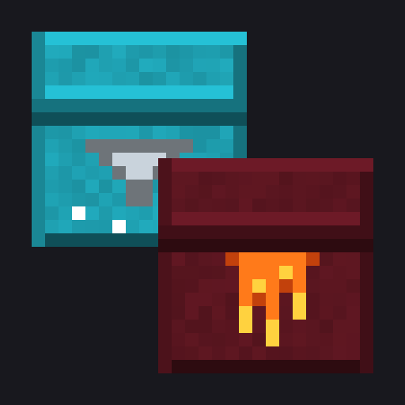
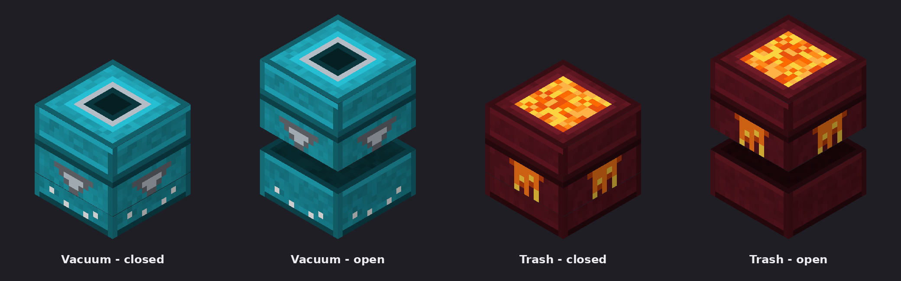
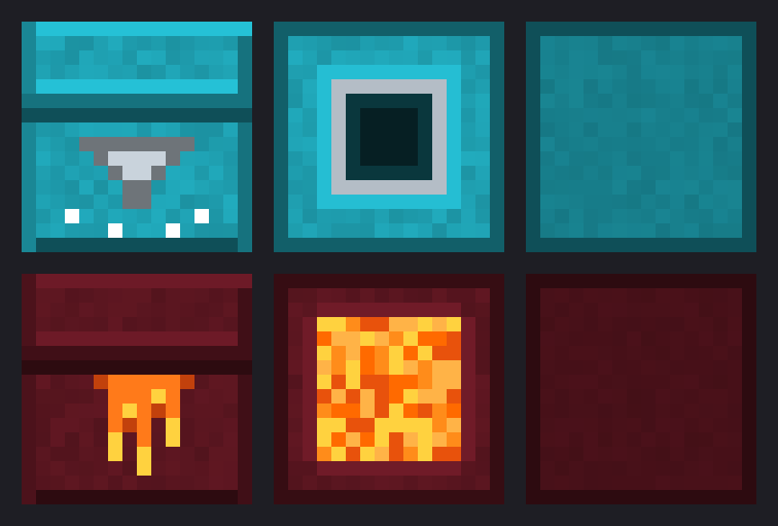

Minecraft plugin · Spigot, Paper & PurpurShulkerVacuum.
Two new shulker boxes. The Vacuum box stores what you mine and pick up; the Trash box deletes it. Craft them from any shulker box.
Free · Minecraft 1.17 – 26.3 · Spigot, Paper, Purpur · MIT licence
What it does.
Shulker Box of Vacuum
Any shulker box + a hopper. In your off-hand, blocks you mine go straight in; in your main hand, items you pick up do.
Shulker Box of Trash
Any shulker box + a lava bucket. Blocks you mine or items you pick up are deleted instead.
Keeps your box
Any colour works, and the crafted box keeps its colour and contents. Craft again to switch between Vacuum and Trash.
Nothing lost
A full Vacuum box hands the rest to your inventory. Shulker boxes and other containers are never stored or deleted.
Its own look
On 1.21.4 and newer the boxes get custom textures, in hand and when placed, with a lid that lifts and twists open.
Pack sent for you
The texture pack is added for each player as they join, alongside any other server pack. Nothing to set up.
Pictures.




Setup.
Download
Get the latest .jar from Modrinth or GitHub Releases.
Install
Drop it into your server's plugins folder.
Restart
Restart the server. The recipes are ready straight away.
Tweak
Optional:
plugins/ShulkerVaccuum/config.ymlturns the placed look or the pack prompt on or off.